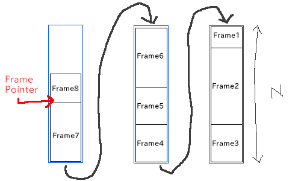
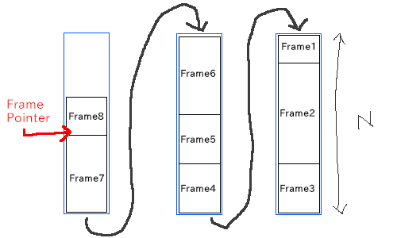

Chezのcall/cc論文の紹介(のようなもの)
Tags:Scheme2019-12-04
Lisp Advent Calendar 2019 の4日目の記事です。
おくれてすみません。(不足を感じているのでたぶんあとでこの記事は加筆されます。)
さて、今年Scheme界隈での大きな出来事の一つはChezがRacketのコアに導入されたことです。なのでChez関連のなにかの記事を書こうと思いまして、Chezのcall/ccの実装論文のstack.pdfの紹介をします。継続実装としては、スタックのコピーやCPS変換といった方針がありますが、Chezはスタックコピーする方を採用しています。通常継続のコピーはスタックの長さに依存した時間が必要だったのが、Chezの実装だとコピーを行わないため、定数時間で継続の作成ができます。

ただpopされたペアが浮いてHeapに残留しているため不要になれば回収する必要があります。また、セルの確保時に連続したメモリに配置される保証はないため、局所性が下がってしまうという欠点(キャッシュとかがあまり有効でなくなる)もあります。listでのスタック管理で継続を実装すると継続確保と呼び出しでのコピーが発生しないので、継続周りだけならvectorのものよりも優れてはいます。ただ、listでのスタック管理はすべての手続き呼び出しで前述のオーバーヘッドがかかるのでvectorのものより結果的に遅くなります。


おくれてすみません。(不足を感じているのでたぶんあとでこの記事は加筆されます。)
さて、今年Scheme界隈での大きな出来事の一つはChezがRacketのコアに導入されたことです。なのでChez関連のなにかの記事を書こうと思いまして、Chezのcall/ccの実装論文のstack.pdfの紹介をします。継続実装としては、スタックのコピーやCPS変換といった方針がありますが、Chezはスタックコピーする方を採用しています。通常継続のコピーはスタックの長さに依存した時間が必要だったのが、Chezの実装だとコピーを行わないため、定数時間で継続の作成ができます。
スタックコピー型の継続実装
通常のプログラム言語の場合、関数を呼び出した時スタックにリターンアドレスやローカル変数が含まれたフレームがプッシュされ、リターン時にポップされた後はそのフレームは不要になります。Schemeの場合は、継続によって一度リターンした後も再度そこから実行することが要求されるため、なにかしらの手段でスタックを過去の状態に復元する必要があります。単純な実現方法のひとつがcall/ccした時にスタックの情報をヒープにコピーしておき、継続の呼び出し時にヒープからスタックにコピーするというやりかたです。Chezはこの方法を改良してcall/cc時のコピーを定数時間にして、呼び出し時のスタック消費の大量消費を押さえるような実装になっています。典型的なStackのモデル
普通のStack
vectorのような連続でメモリ上配置されるデータ構造でStackの実装すると、pushしてpopしてpushすると最初にpushしたデータをおいてある領域が後にpushしたデータで上書きされます。Listで実装したStack
listでStackの実装すると、pushしてpopしてpushしてもpush時に新しい領域を確保してそこに書き込むので元のセルは破壊されません。ただpopされたペアが浮いてHeapに残留しているため不要になれば回収する必要があります。また、セルの確保時に連続したメモリに配置される保証はないため、局所性が下がってしまうという欠点(キャッシュとかがあまり有効でなくなる)もあります。listでのスタック管理で継続を実装すると継続確保と呼び出しでのコピーが発生しないので、継続周りだけならvectorのものよりも優れてはいます。ただ、listでのスタック管理はすべての手続き呼び出しで前述のオーバーヘッドがかかるのでvectorのものより結果的に遅くなります。
ChezのStackの構造
ChezのStackは上2つの要素を複合させたようなモデルで、 固定長のスタック(スタックセグメント)をポインタでつないでいます。
継続の確保
継続の作成は現在のスタックセグメントの使用済み部分を切り離して、その切り離した部分から下を使用不可にするだけです。この下の凍結された使用不可部分が継続オブジェクトになります。そして切り離したスタックセグメントの未使用部分(切り離した部分から上)を新しいスタックセグメントとします。当然、新しいスタックセグメントは切り離した分だけ元のサイズから小さくなります。何度も継続を作成してカレントスタックがとても小さくなれば、最終的にサイズがとても小さくなり新しいスタックのアロケーションのコストがかかります。継続の呼び出し
継続の呼び出しは基本的には凍結したスタックセグメントを現在のスタックセグメントに移すだけなのですが、基準値と現在のスタックサイズとの比較で挙動が少し変わります。- 1.凍結したスタックセグメントが基準値以下かつ現在のスタックセグメントのサイズより小さい→ そのまま現在のスタックセグメントにコピーする。
- 2.凍結したスタックセグメントが基準値以下かつ現在のスタックセグメントのサイズより大きい→ 新しくスタックセグメントをアロケートしてそこにコピーする。
- 3.凍結したスタックセグメントが基準値より大きい場合→ 凍結したスタックセグメントを基準値以下になるように分割して、その部分だけコピーする
(call/cc (lambda (x) (some-fun x)))このときにcall/ccで取り出した継続を暗黙のうちに呼び出す操作が必要になります。理由は単純でそのまま脱出すると継続の補足時に凍結した、変更してはいけない領域を破壊する可能性があるためです。単純なスタック管理の場合ではスタックのコピーをヒープにとってあるため、そのままオリジナルを破壊してしまっても問題にはなりませんが、Chezの方針だとコピーを取らないためオリジナルをコピーして使う必要があります。